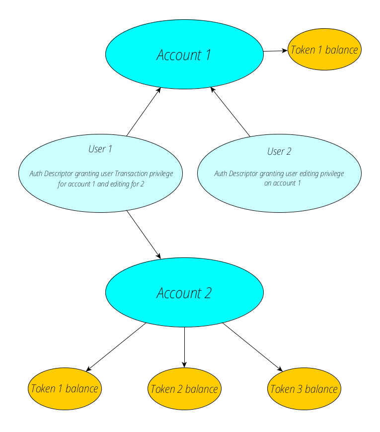

Features¶
FT3 supports the following features:
Account management
Asset management and transaction history
Single Sign-on (SSO) from the Vault
Account Management¶
The central entity of FT3 module is account. An account is uniquely identified by an id.
entity account {
key id: byte_array;
}
Multiple users are supposed to be able to have access to the same account, but they all dont necessarily have the same privileges when it comes to using the account. Therefore we introduce the authority descriptor, this entity will link users to accounts and specify what type of authority they have over the account. This will be the basic structure of our ft3 accounts:
The authority descriptor consists of a descriptor_id which will be the users public key and an account/descriptor_id relation key account, descriptor_id. This relation is what links an account to a user, when we create a user in our frontend,
we will include a keypair and an auth descriptor, and when we link a user to a new account we create a new authority descriptor for the relation the user and account have towards eachother.
entity account_auth_descriptor {
descriptor_id: byte_array;
key account, descriptor_id;
index descriptor_id;
auth_type: text;
args: byte_array;
}
At the moment, the module defines two types of authentication descriptors: SingleSig and MultiSig and two authorization types: Authentication ("A") and Transfer ("T"). The A flag specifies who can edit an account (and thus has all priviledges to the account), and the T can only transfer assets.
Although there are only two predefined authorization flags, dapp developers are free to add more flag types to create a custom access control for his dapp.
SingleSig authentication descriptor is used to provide access to a single user. The descriptor accepts user’s public key and authorization flags which specify what access rights the user has:
struct single_sig_args {
flags: set<text>;
pubkey;
}
MutliSig authentication descriptor provides M of N control of an account. It accepts a list of N public keys, of which a minimum number M of signatures are required to authorize an operation and a set of authorization flags:
struct multi_sig_args {
flags: set<text>;
signatures_required: integer;
pubkeys: list<pubkey>;
}
Asset Management¶
FT3 provides support for multiple assets. The asset table contains list of registered assets:
entity asset {
id: byte_array;
key id;
key name;
issuing_chain_rid: byte_array;
}
Note
Although we can only transfer within the same chain for now. issuing_chain_rid is kept in preparation for coming release when FT3 support cross-chain asset transfer.
The balance table keeps track of an account’s assets:
entity balance {
key account, asset;
mutable amount: integer = 0;
}
Single Sign-on (SSO)¶
SSO allows a user to login to different applications with a single account (similar to how “Login with Google/Facebook” work).
The Vault is an SSO service of the Chrommia ecosystem: any FT3 dapp can be configured to allow users to login using their Vault account.